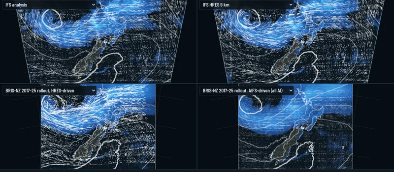
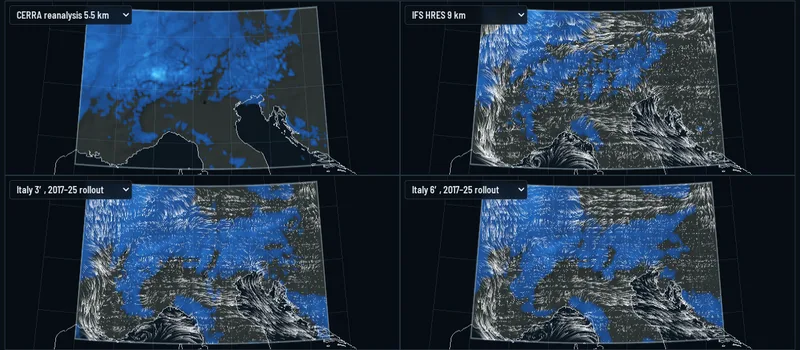
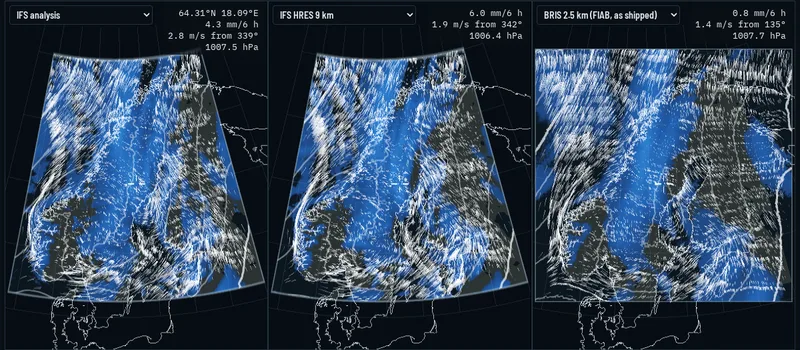
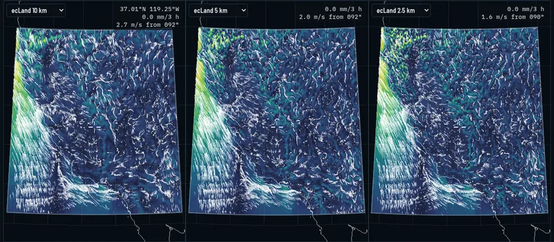

Playing with FIAB
Regional AI weather and land experiments run with ECMWF's Forecast-in-a-Box, shown as interactive forecast viewers.
Forecast-in-a-Box (FIAB) is ECMWF's open-source package for running data-driven weather models end to end on a single machine: it fetches initial conditions, runs an Anemoi model such as AIFS or a limited-area model like MET Norway's BRIS, and writes the forecast as GRIB, all from a browser or its REST API.
These pages use FIAB as a test bench. Global and limited-area models were run, fine-tuned for new domains, and coupled to the ecLand land surface and CaMa-Flood rivers. Each viewer below compares them with IFS analyses and HRES (or with the reference data used) over one week.
Forecast viewers

New Zealand NZ
Week of 17–23 January 2026
BRIS translated to New Zealand at 2.5 km, fine-tuned on 2017–25 IFS analyses and driven by HRES or AIFS (an all-AI chain), with the 6′ limited-area models, against IFS analysis and HRES.

Italy IT
Week of 25 June – 1 July 2026
The Italy 3′ and 6′ limited-area models, trained on CERRA and IFS analyses and rolled out over 2017–25, against CERRA, IFS analysis and HRES, through the Alpine storms of 29 June.

Norway NO
Week of 22–28 September 2026
MET Norway's BRIS 2.5 km model as shipped, run through FIAB from IFS initial conditions at 00 and 12 UTC, against IFS analysis and HRES. BRIS runs are added as they complete.

California CA
Atmospheric rivers of 3–10 January 2023
ecLand at 10, 5 and 2.5 km forced by CONUS404-BA: rain, temperature and wind going in, Sierra snowpack and runoff coming out.
In the viewers: drag or scroll to move, space to play, the arrow keys step in time; choose the run, the field and up to four side-by-side panels at the top. A WebGL2 browser is needed; a hard refresh picks up new data.